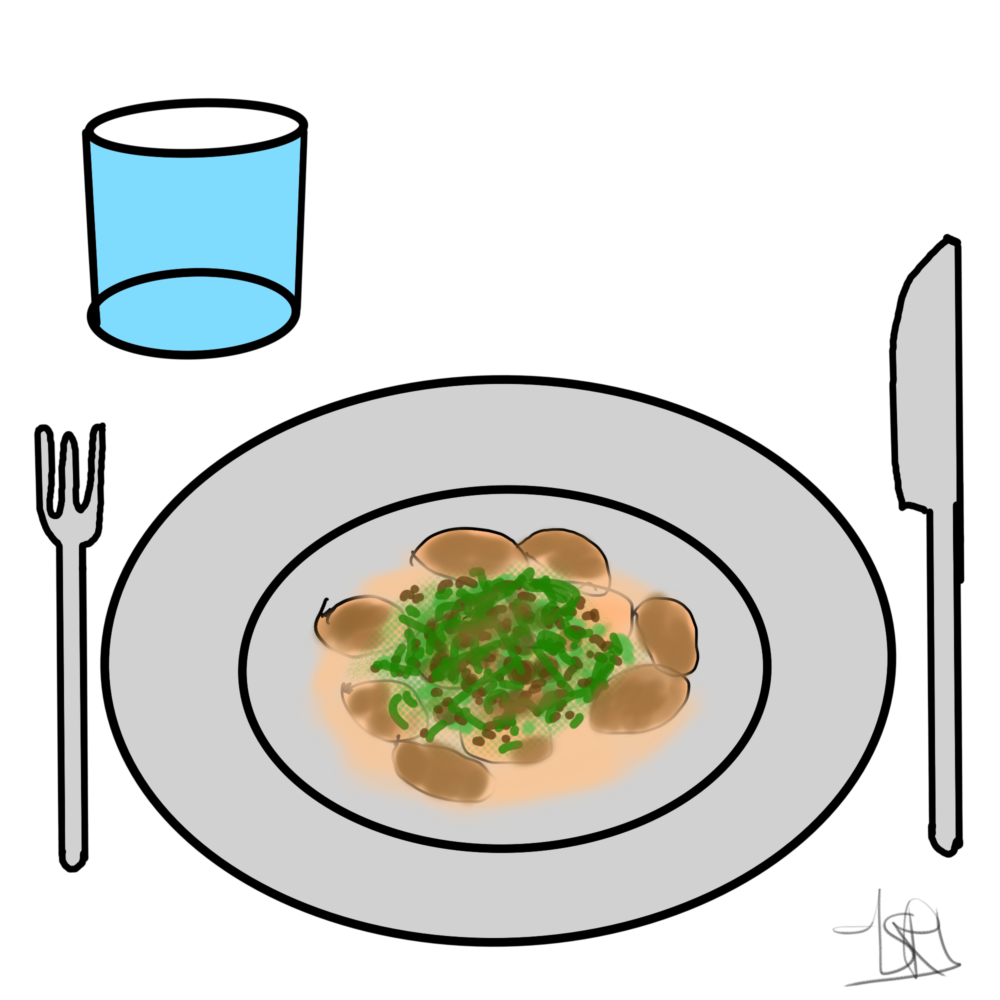

Lauchgemüse mit Kartoffeln

Beschreibung
Vorbereitung: 15 Minuten
Kochen: 25 Minuten
Portionen: 3
Zutaten
- 1 kleine Knoblauchzehe
- 60 Gramm Sojagranulat fein
- 1 Stande Porree
- 200 Milliliter Sojacreme
- 200 Milliliter Sojadrink ungesüß
- 100 Gramm Austernpilze
- 400-500 Gramm Kartoffeln
- 1/2 Liter Gemüsebrühe
- Salz und Pfeffer
Anleitung
-
Gib das Sojahack in einen Topf und gib die Gemüsebrühe hinzu.
Erhitzen und für 10-15 Minuten bei mittlerer Hitze köcheln lassen.
Spätestens dann, wenn die Flüssigkeit komplett aufgesogen wurde.
Dann vom Herd nehmen, in ein feines Sieb geben und mit klarem Wasser auswaschen.
Danach gut auspressen und zur Seite stellen.
- Die Kartoffeln schälen halbieren, vierteln und mit reichlich Salzwasser zum Kochen bringen und garen.
-
Die Austernpilze grob säubern, falls nötig und dann fein hacken.
Den Lauch/Porree waschen, die Wurzel und ca. die letzten 3-5 cm vom grünen Teil entfernen,
da dieser etwas holzig schmeckt. In feine Ringe schneiden und erstmal zur Seite stellen.
-
Den Knoblauch schälen und fein hacken.
Etwas Öl in einem mittelgroßen Topf erhitzen und den Knoblauch zusammen mit dem Sojahack bei mittlerer Hitze für 4-5 Minuten anschwitzen.
Nach 2 Minuten kannst du bereits die Pilze dazugeben.
-
Gib jetzt den Lauch dazu, vermenge alles gut und nochmal für 2-3 Minuten anschwitzen.
Danach mit Sojasahne und Sojamilch aufgießen und wieder zum Kochen bringen.
Danach die Hitze leicht reduzieren und für 5 Minuten köcheln lassen. Mit Salz und Pfeffer abschmecken.
-
Gib jetzt die Kartoffeln auf einen tiefen Teller und gib etwas vom Gemüse und der Sauce dazu.
Jetzt kannst du das Lauchgemüse mit Kartoffeln servieren.
Zurück zur Homepage